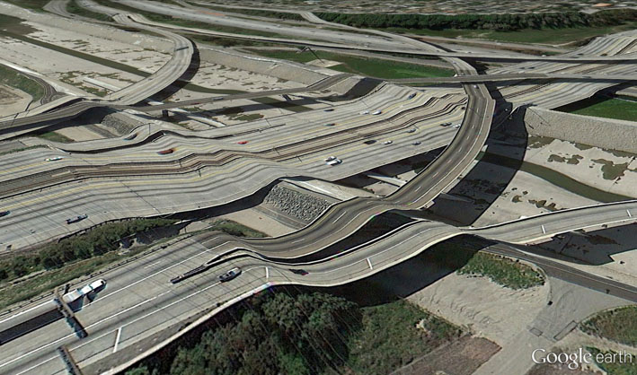

When you open Google Earth, it settles at the default elevation of 11,000 km above the planet. The effect is tranquil, partly from the soft-glow space panorama and partly from the sense of disengagement. The crystal-clear imagery, supplied by NASA, depicts the world in a photoreal representation. It is the ultimate expression of what cartographers call the God’s-eye view: the desire for absolute visual objectivity in maps, presenting every region of the globe in its proper place.
But maps lie. They naturalise the planet’s boundaries and endpoints in ways that serve ulterior motives. The most popular map of the world, the Mercator projection, is a cartographic model of reality founded on a blatant misrepresentation. In the Mercator world, countries are not relative to each other. The sizes of North American and European countries are wildly inflated, while those of third-world nations are greatly diminished. During the 1970s and 80s, the so-called “map wars” were fought, during which a new map, the Gall-Peters projection, was pitted against the Mercator, which stood accused of being a repressive symbol of Eurocentric colonialism.
Google Earth is more than the God’s-eye view – more than just us mortals seeing through the eyes of God. In Google Earth, we are God. We see over, under, inside and out. We see into the beyond, with a second sight unavailable to our mortal selves. We see ghosts of dead friends and dead strangers. We see ourselves. If the colonial God’s-eye view in Mercator maps is an uneasy settling of the planet (hoping the savages will stay in their place and not upset the prescribed order), then Google Earth, with its forking paths Google Maps and Google Street View, is a parallel world bleeding into this one.
“Copyright traps” are fake features cartographers insert into maps to catch plagiarists. If the map is copied and published without permission, it can be traced due to the inclusion of a street leading in the wrong direction, or a building that doesn’t exist. In Street View, such impossible objects are a matter of course. Google boundaries are porous. They dissolve. I have never seen anything so beautiful in all my life as the melting freeways of the USA, the next nature of glitched-out Google projections. In Google Earth, images are spliced together, taken at different times of day. Sometimes you can see the joins, where the process hasn’t fully knitted. It might be an RGB-separated cloud of light surrounding an object, or a pink-yellow pixel-glitch tornado rising to the sky. Sometimes in Street View, if your connection is slow, when moving through a city, the interlacing mechanism is revealed. You can see the front of a building sliding in over the background, compressing the architecture into a narrow band of light so that it appears to be a paper-thin facade slipping into place. Reality becomes a stage set, the scenery changing before your eyes.
Los Angeles: the melting freeways of the USA. Archived image from Clement Valla’s Postcards from Google Earth.
Sometimes, the Google Earth algorithm maps one texture over another to produce beguiling landscapes. A freeway overpass, suspended high above the ground, follows precisely the undulating terrain of a large valley, producing a contorted, fluid road system from another dimension. Clouds smear over the contours of a mountain, like a form-fitting, fluffy white blanket. Skyscrapers are laid flat against the ground, yet, impossibly, impart a three-dimensional sense of height. Google Earth is a digitised Mercator, squashing disproportionate dimensions into a totalising system with its own internal logic (Google Maps are actually based on a Mercator variant). When Apple’s iPhone maps also began spewing out strange new topologies at a rapid rate, the company was roundly mocked, yet I thought them immensely poetic, a world I would very much like to live in: Steve Jobs’ reality distortion field.